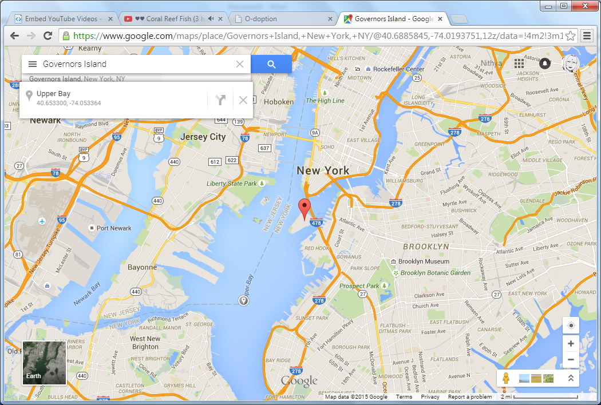

Here you can view information about the status of your adoption and how your oysters are doing.
July 31st is a hot and humid day near the site where your oysters are. It is currently high tide.

See how your oysters are doing!
The oyster site is open on Mondays to Fridays, at 8:00 a.m or 4:00 p.m.